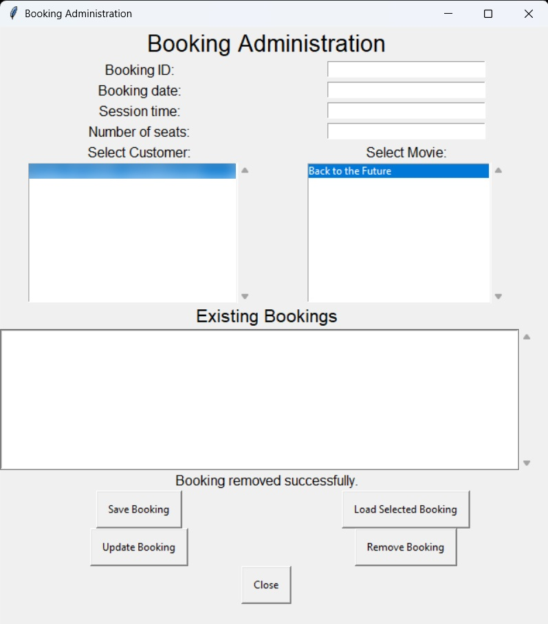

Cinema administration application

Developed a graphical application using Python and guizero, applying interface components and program logic to support a cinema administration task.
The screenshot shows the booking administration interface, including booking details, customer and movie selection, existing bookings and booking controls.